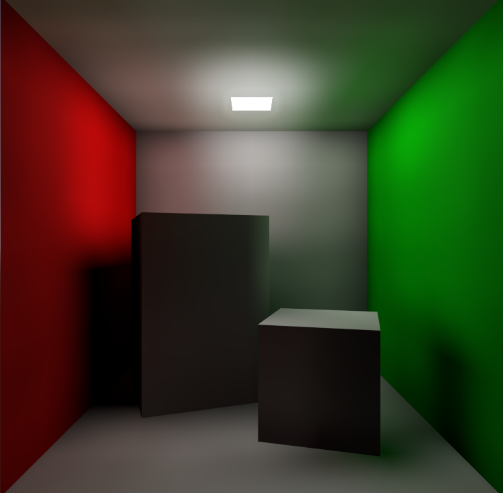
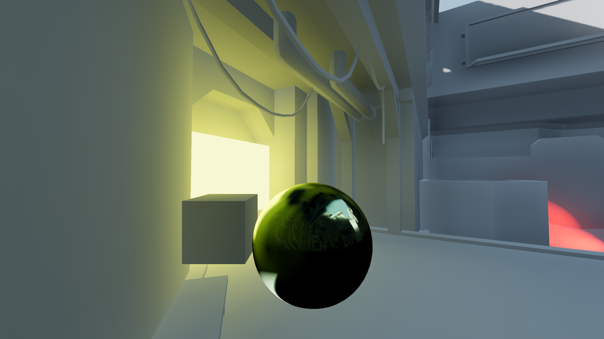
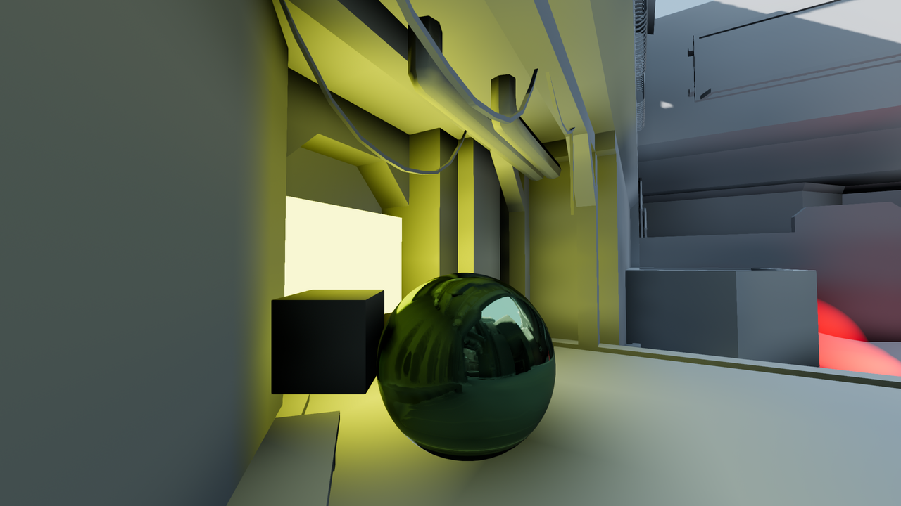
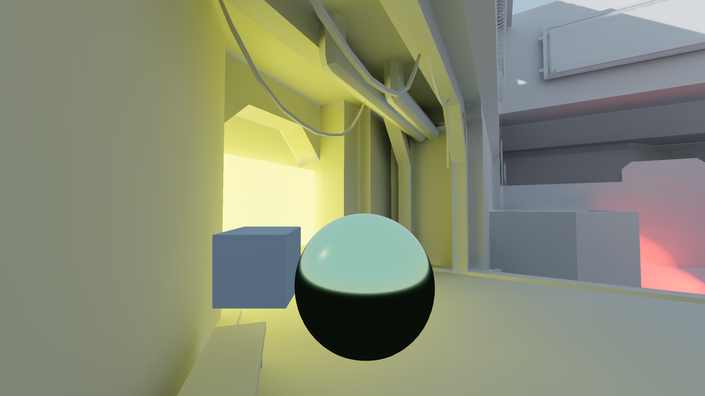
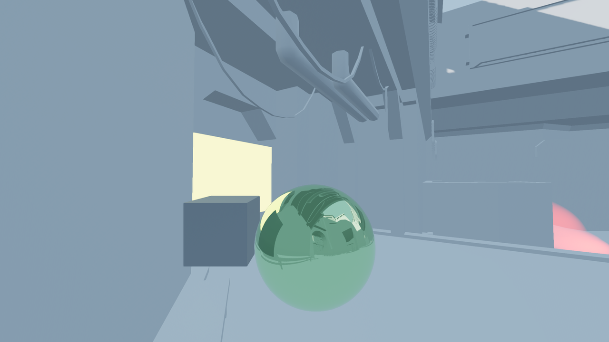

Introduction to global illumination
What is global illumination?
Global illumination is a catch-all term used to describe a system of lighting that uses both direct light (light that comes directly from a light source) and indirect light (light that bounces from a surface). In a 3D rendering engine, global illumination is one of the most important elements to achieving realistic lighting. Global illumination aims to mimic how light behaves in real life, such as light bouncing on surfaces and light being emitted from emissive materials.
In the example below, the entire scene is illuminated by an emissive material (the white square at the top). The white wall and ceiling on the back is tinted red and green close to the walls, as the light bouncing on the colored walls is being reflected back onto the rest of the scene.

Global illumination is composed of several key concepts:
Indirect diffuse lighting
This is the lighting that does not change depending on the camera's angle. There are two main sources of indirect diffuse lighting:
Light bouncing on surfaces. This bounced lighting is multiplied with the material's albedo color. The bounced lighting can then be reflected by other surfaces, with decreasing impact due to light attenuation. In real life, light bounces an infinite number of times. However, for performance reasons, this can't be simulated in a game engine. Instead, the number of bounces is typically limited to 1 or 2 (or up to 16 when baking lightmaps). A greater number of bounces will lead to more realistic light falloff in shaded areas, at the cost of lower performance or greater bake times.
Emissive materials can also emit light that can be bounced on surfaces. This acts as a form of area lighting. Instead of having an infinitely small point emit light using an OmniLight3D or SpotLight3D node, an area of a determined size will emit light using its own surface.
Direct diffuse lighting is already handled by the light nodes themselves, which means that global illumination algorithms only try to represent indirect lighting.
Different global illumination techniques offer varying levels of accuracy to represent indirect diffuse lighting. See the comparison table at the bottom of this page for more information.
To provide more accurate ambient occlusion for small objects, screen-space ambient occlusion (SSAO) can be enabled in the environment settings. SSAO has a significant performance cost, so make sure to disable it when targeting low-end hardware.
Note
Indirect diffuse lighting may be a source of color banding in scenes with no detailed textures. This results in light gradients not being smooth, but having a visible "stepping" effect instead. See the Color banding section in the 3D rendering limitations documentation for ways to reduce this effect.
Specular lighting
Specular lighting is also referred to as reflections. This is the lighting that changes in intensity depending on the camera's angle. This specular lighting can be direct or indirect.
Most global illumination techniques offer a way to render specular lighting. However, the degree of accuracy at which specular lighting is rendered varies greatly from technique to technique. See the comparison table at the bottom of this page for more information.
To provide more accurate reflections for small objects, screen-space reflections (SSR) can be enabled in the environment settings. SSR has a significant performance cost (even more so than SSAO), so make sure to disable it when targeting low-end hardware.
Which global illumination technique should I use?
When determining a global illumination (GI) technique to use, there are several criteria to keep in mind:
Performance. Real-time GI techniques are usually more expensive compared to semi-real-time or baked techniques. Note that most of the cost in GI rendering is spent on the GPU, rather than the CPU.
Visuals. On top of not performing the best, real-time GI techniques generally don't provide the best visual output. This is especially the case in a mostly static scene where the dynamic nature of real-time GI is not easily noticeable. If maximizing visual quality is your goal, baked techniques will often look better and will result in fewer light leaks.
Real-time ability. Some GI techniques are fully real-time, whereas others are only semi-real-time or aren't real-time at all. Semi-real-time techniques have restrictions that fully real-time techniques don't. For instance, dynamic objects may not contribute emissive lighting to the scene. Non-real-time techniques do not support any form of dynamic GI, so it must be faked using other techniques if needed (such as placing positional lights near emissive surfaces). Real-time ability also affects the GI technique's viability in procedurally generated levels.
User work needed. Some GI techniques are fully automatic, whereas others require careful planning and manual work on the user's side. Depending on your time budget, some GI techniques may be preferable to others.
Here's a comparison of all the global illumination techniques available in Godot:
Performance
In order of performance from fastest to slowest:
ReflectionProbe:
ReflectionProbes with their update mode set to Always are much more expensive than probes with their update mode set to Once (the default). Suited for integrated graphics when using the Once update mode. Available in all renderers.
LightmapGI:
Lights can be baked with indirect lighting only, or fully baked on a per-light basis to further improve performance. Hybrid setups can be used (such as having a real-time directional light and fully baked positional lights). Directional information can be enabled before baking to improve visuals at a small performance cost (and at the cost of larger file sizes). Suited for integrated graphics. Available in all renderers. However, baking lightmaps requires hardware with RenderingDevice support.
VoxelGI:
The bake's number of subdivisions can be adjusted to balance between performance and quality. The VoxelGI rendering quality can be adjusted in the Project Settings. The rendering can optionally be performed at half resolution (and then linearly scaled) to improve performance significantly. Not available when using the Mobile or Compatibility renderers.
Screen-space indirect lighting (SSIL):
The SSIL quality and number of blur passes can be adjusted in the Project Settings. By default, SSIL rendering is performed at half resolution (and then linearly scaled) to ensure a reasonable performance level. Not available when using the Mobile or Compatibility renderers.
SDFGI:
The number of cascades can be adjusted to balance performance and quality. The number of rays thrown per frame can be adjusted in the Project Settings. The rendering can optionally be performed at half resolution (and then linearly scaled) to improve performance significantly. Not available when using the Mobile or Compatibility renderers.
Visuals
For comparison, here's a 3D scene with no global illumination options used:

A 3D scene without any form of global illumination (only constant environment lighting). The box and sphere near the camera are both dynamic objects.
Here's how Godot's various global illumination techniques compare:
VoxelGI: Good reflections and indirect lighting, but beware of leaks.
Due to its voxel-based nature, VoxelGI will exhibit light leaks if walls and floors are too thin. It's recommended to make sure all solid surfaces are at least as thick as one voxel.
Streaking artifacts may also be visible on sloped surfaces. In this case, tweaking the bias properties or rotating the VoxelGI node can help combat this.

VoxelGI in action.
SDFGI: Good reflections and indirect lighting, but beware of leaks and visible cascade shifts.
GI level of detail varies depending on the distance between the camera and surface.
Leaks can be reduced significantly by enabling the Use Occlusion property. This has a small performance cost, but it often results in fewer leaks compared to VoxelGI.
Cascade shifts may be visible when the camera moves fast. This can be made less noticeable by adjusting the cascade sizes or using fog.

SDFGI in action.
Screen-space indirect lighting (SSIL): Good secondary source of indirect lighting, but no reflections.
SSIL is designed to be used as a complement to another GI technique such as VoxelGI, SDFGI or LightmapGI. SSIL works best for small-scale details, as it cannot provide accurate indirect lighting for large structures on its own. SSIL can provide real-time indirect lighting in situations where other GI techniques fail to capture small-scale details or dynamic objects. Its screen-space nature will result in some artifacts, especially when objects enter and leave the screen. SSIL works using the last frame's color (before post-processing) which means that emissive decals and custom shaders are included (as long as they're present on screen).

SSIL in action (without any other GI technique). Notice the emissive lighting around the yellow box.
LightmapGI:
 Excellent indirect lighting, decent reflections (optional).
Excellent indirect lighting, decent reflections (optional).This is the only technique where the number of light bounces can be pushed above 2 (up to 16). When directional information is enabled, spherical harmonics (SH) are used to provide blurry reflections.

LightmapGI in action. Only indirect lighting is baked here, but direct light can also be baked.
ReflectionProbe: Good reflections, but poor indirect lighting.
Indirect lighting can be disabled, set to a constant color spread throughout the probe, or automatically read from the probe's environment (and applied as a cubemap). This essentially acts as local ambient lighting. Reflections and indirect lighting are blended with other nearby probes.

ReflectionProbe in action (without any other GI technique). Notice the reflective sphere.
Real-time ability
VoxelGI:
Fully real-time.Indirect lighting and reflections are fully real-time. Dynamic objects can receive GI and contribute to it with their emissive surfaces. Custom shaders can also emit their own light, which will be emitted accurately.
Viable for procedurally generated levels if they are generated in advance (and not during gameplay). Baking requires several seconds or more to complete, but it can be done from both the editor and an exported project.
SDFGI: Semi-real-time.
Cascades are generated in real-time, making SDFGI viable for procedurally generated levels (including when structures are generated during gameplay).
Dynamic objects can receive GI, but not contribute to it. Emissive lighting will only update when an object enters a cascade, so it may still work for slow-moving objects.
Screen-space indirect lighting (SSIL):
Fully real-time.SSIL works with both static and dynamic lights. It also works with both static and dynamic occluders (including emissive materials).
LightmapGI: Baked, and therefore not real-time.
Both indirect lighting and SH reflections are baked and can't be changed at runtime. Real-time GI must be simulated via other means, such as real-time positional lights. Dynamic objects receive indirect lighting via light probes, which can be placed automatically or manually by the user (LightmapProbe node). Not viable for procedurally generated levels, as baking lightmaps is only possible from the editor.
ReflectionProbe: Optionally real-time.
By default, reflections update when the probe is moved. They update as often as possible if the update mode is set to Always (which is expensive).
Indirect lighting must be configured manually by the user, but can be changed at runtime without causing an expensive computation to happen behind the scenes. This makes ReflectionProbes viable for procedurally generated levels.
User work needed
VoxelGI: One or more VoxelGI nodes need to be created and baked.
Adjusting extents correctly is required to get good results. Additionally rotating the node and baking again can help combat leaks or streaking artifacts in certain situations. Bake times are fast – usually below 10 seconds for a scene of medium complexity.
SDFGI: Very little.
SDFGI is fully automatic; it only needs to be enabled in the Environment resource. The only manual work required is to set MeshInstances' bake mode property correctly. No node needs to be created, and no baking is required.
Screen-space indirect lighting (SSIL): Very little.
SSIL is fully automatic; it only needs to be enabled in the Environment resource. No node needs to be created, and no baking is required.
LightmapGI: Requires UV2 setup and baking.
Static meshes must be reimported with UV2 and lightmap generation enabled. On a dedicated GPU, bake times are relatively fast thanks to the GPU-based lightmap baking – usually below 1 minute for a scene of medium complexity.
ReflectionProbe: Placed manually by the user.
Summary
If you are unsure about which GI technique to use:
For desktop games, it's a good idea to start with SDFGI first as it requires the least amount of setup. Move to other GI techniques later if needed. To improve performance on low-end GPUs and integrated graphics, consider adding an option to disable SDFGI or VoxelGI in your game's settings. SDFGI can be disabled in the Environment resource, and VoxelGI can be disabled by hiding the VoxelGI node(s). To further improve visuals on high-end setups, add an option to enable SSIL in your game's settings.
For mobile games, LightmapGI and ReflectionProbes are the only supported options. See also Alternatives to GI techniques.
See also
You can compare global illumination techniques in action using the Global Illumination demo project.
Which global illumination mode should I use on meshes and lights?
Regardless of which global illumination technique you use, there is no universally "better" global illumination mode. Still, here are some recommendations for meshes:
For static level geometry, use the Static global illumination mode (default).
For small dynamic geometry and players/enemies, use the Disabled global illumination mode. Small dynamic geometry will not be able to contribute a significant amount of indirect lighting, due to the geometry being smaller than a voxel. If you need indirect lighting for small dynamic objects, it can be simulated using an OmniLight3D or SpotLight3D node parented to the object.
For large dynamic level geometry (such as a moving train), use the Dynamic global illumination mode. Note that this only has an effect with VoxelGI, as SDFGI and LightmapGI do not support global illumination with dynamic objects.
Here are some recommendations for light bake modes:
For static level lighting, use the Static bake mode. The Static mode is also suitable for dynamic lights that don't change much during gameplay, such as a flickering torch.
For short-lived dynamic effects (such as a weapon), use the Disabled bake mode to improve performance.
For long-lived dynamic effects (such as a rotating alarm light), use the Dynamic bake mode to improve quality (default). Note that this only has an effect with VoxelGI and SDFGI, as LightmapGI does not support global illumination with dynamic lights.
Alternatives to GI techniques
If none of the GI techniques mentioned above fits, it's still possible to simulate GI by placing additional lights manually. This requires more manual work, but it can offer good performance and good visuals if done right. This approach is still used in many modern games to this day.
When targeting low-end hardware in situations where using LightmapGI is not viable (such as procedurally generated levels), relying on environment lighting alone or a constant ambient light factor may be a necessity. This may result in flatter visuals, but adjusting the ambient light color and sky contribution still makes it possible to achieve acceptable results in most cases.